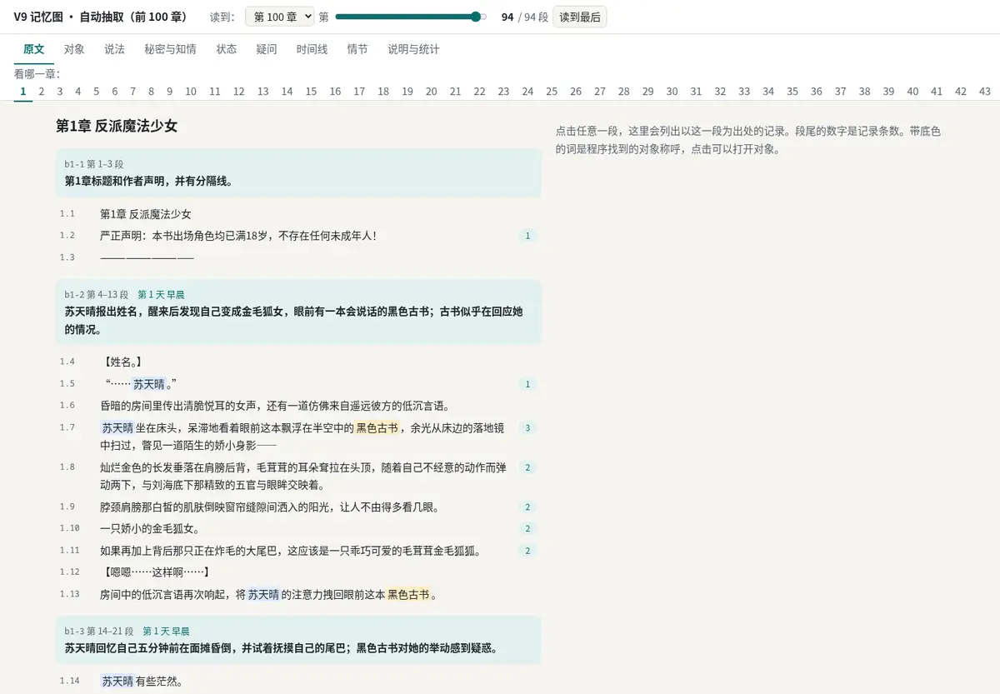
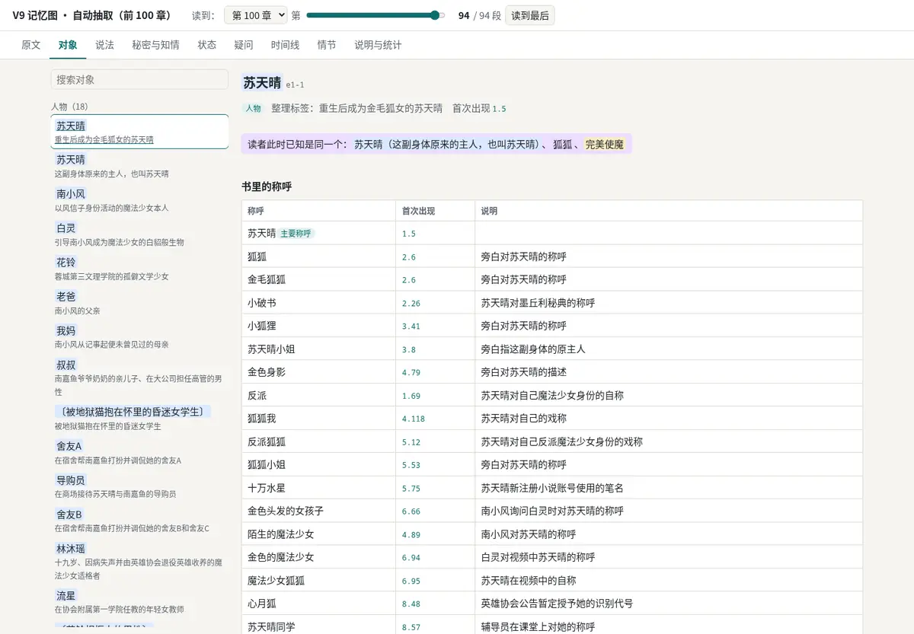
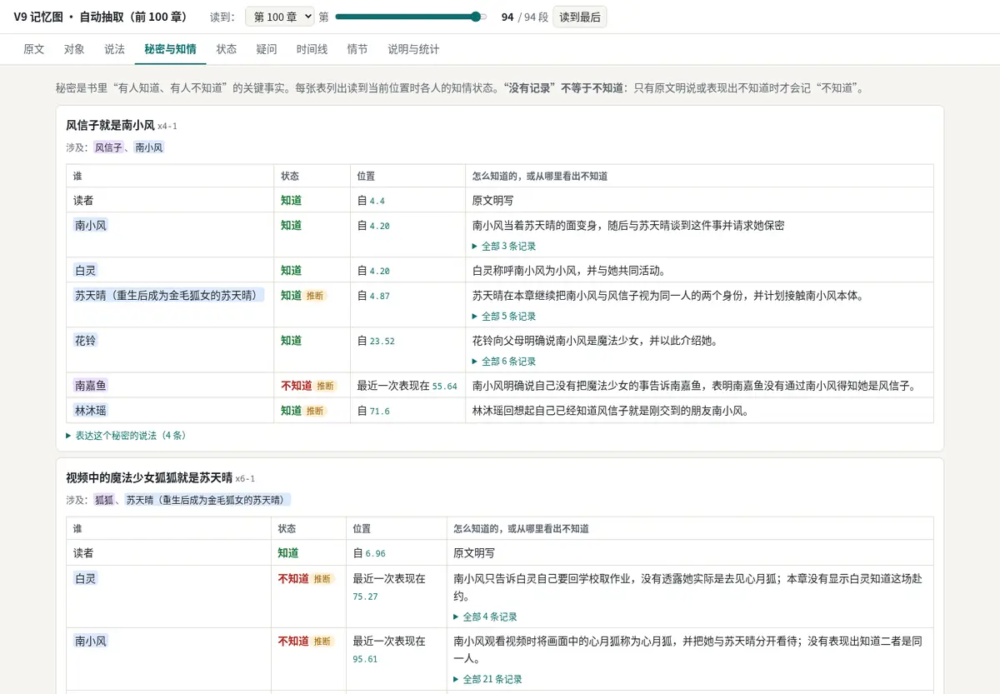
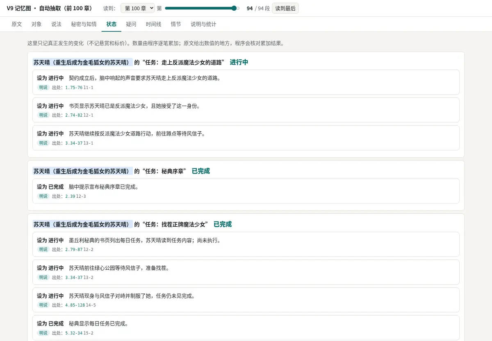
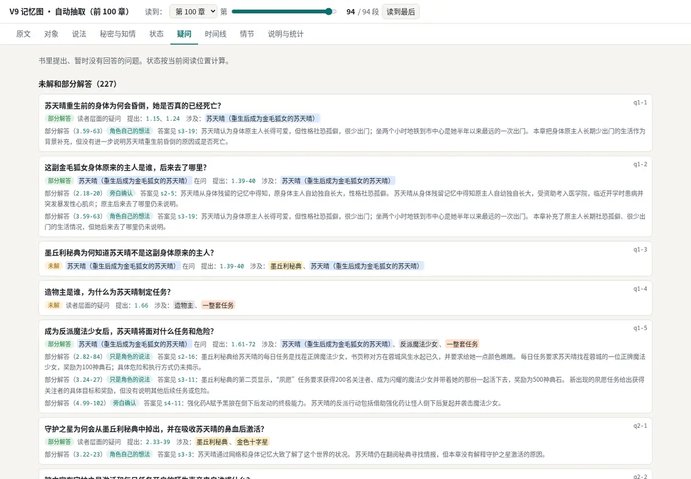

第 1 轮：先定注意力排序
nb-story 第一版是网页查看器加问答，数据是 w00005 t34 自动抽取的前 100 章。视觉稿要在“首先看什么、默认收起什么、什么时候整块收起”定了以后再画，否则会被反复推翻。所以这一轮只有五道题：首页、默认收起、问答的位置、嵌进 NeuroBook 后的尺寸、旧查看器的机制沿用哪些。
每道题都写了推荐和理由（带色框的是推荐项）。现状的截图和问题在最下面；完整清单见 Task 目录的 reference.md。
待定1. 打开一本书，首先看到什么？
这决定首页，也决定左侧导航的第一项。三种都能做，差别是第一眼服务哪种用法。
本章：这一章发生了什么、变了什么
读到的这一章的情节概括，新出现的人，揭晓的秘密，数值变动，新提出和被解答的悬念。拨动“读到哪里”就换一章。
原文阅读器，旁边跟着显示相关的人和记录
边读边查：点哪段，右边就是这一段涉及的人物、秘密和数值。适合第一次读这本书的人。
全书总览
主要人物、秘密矩阵、未解悬念数、数值余额放在一页上，先看全局。
待定2. 哪些东西默认收起或不显示？（可多选）
图里的东西很多（176 个对象、1,739 条说法、227 条没解开的悬念），全摊开就是现在 t28 的样子。选中的项默认收起，点一下展开；没选的照常显示。
| 选项 | 收起后怎么找到 |
|---|---|
| 次要人物（舍友、导购员这类路人） | 名册底部“次要”一栏，搜索照样能搜到 |
| 记录编号（s3-19、q1-1） | 鼠标悬停时显示，复制链接时带上 |
| 原文里夹着的段落块概括 | 阅读器上一个开关 |
| 琐碎的悬念（只在一章里出现、没有后续的） | 悬念页“全部”页签 |
| 人物卡里的长称呼表（只先显示主要的几个） | “全部 45 个称呼”展开 |
| 标了“推断”的记录 | 筛选项“含推断” |
待定3. 问答放在哪里？
问答默认用“图当目录”，要等十几秒到两三分钟，过程分步显示（在图里找记录、读第几章、作答中），答案带依据编号，点开看原文。
顶栏常驻一个提问框，回车后进问答页
在任何页面都能问，问题自动带上当前的“读到哪里”；问答页有完整的进度、答案、依据和历史。
右侧抽屉里问
不离开当前页面，但抽屉窄，长答案和依据原文挤在一起；抽屉还要放人物卡和原文，三样东西抢一个位置。
只在左侧导航的“问答”页里问
最简单，但要先切页面才能问。
待定4. 以后嵌进 NeuroBook，主要以什么尺寸出现？
这决定窄的时候先收起哪一块。单独使用时是整个浏览器窗口；嵌进 NeuroBook 后是工作台里的视图，可能在编辑区，也可能在侧栏。
编辑区里的整页视图（和单独使用时差不多宽）
窄到放不下三栏时：右侧抽屉改成盖在主区上面，再窄左侧导航收成图标条。
侧栏里的窄条，写作时放在稿子旁边
窄条要另设计一个精简版（例如只有人物卡和“谁知道什么”），第一版就要做两套布局。
两种都要
整页是主体，侧栏精简版以后再做；第一版只保证整页在窄宽度下不坏。
待定5. 旧查看器（t28）的机制沿用哪些？（可多选）
每一项写了它防什么。选中的沿用，没选的在产品里去掉或改掉。
| 机制 | 防什么 |
|---|---|
| 读到哪里（选章加拖动条） | 剧透：后文的称呼、身份、知情、数值提前出现 |
| 原文段落上的记录条数，点段落看记录 | 图上的话没有依据 |
| 原文里名字带底色、可点开 | 认不出化名和代号 |
| “明说、推断、角色的说法”标签 | 把推断或角色的一面之词当事实 |
| “没有记录不等于不知道”的说明（改成秘密矩阵的图例） | 把没记录误读成“不知道” |
| “说明与统计”页（草稿写了多少条、程序生成了多少项） | 开发核对程序生成了什么；普通用户用不上 |
五道题按推荐定下时的区域划分。虚线框是区域，编号对应右边的说明；尺寸、颜色、组件都还没画。
t28 是给开发者核对设计用的单个离线页面，不是产品。下面五张是它现在的样子和主要问题；完整截图集在本地，不入库。




